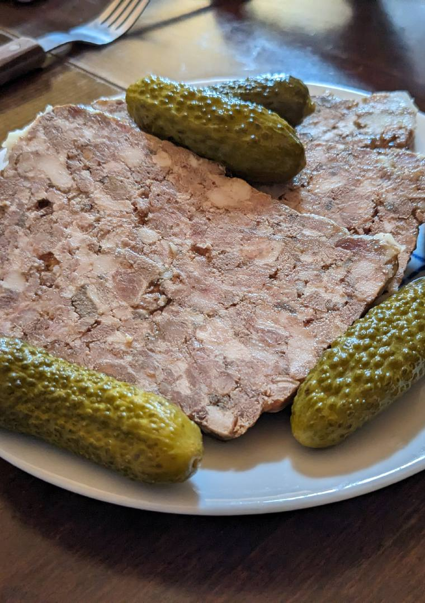

Pâtés en bocaux

Pâtés en bocaux
Pâté de campagne
Préparation : 45 min
Cuisson : 1 h 30
Ingrédients (pour 1 kg de mêlée environ)
- 390 g de gorge de porc
- 240 g de foie de porc
- 170 g de poitrine de porc
- 39 g de crème ou lait
- 8 g d’œuf entier battu
- 39 g d’oignon ou échalote
- 23 g de persil
- 2 g d’ail
- 39 g de vin rouge ou rhum
- 27 g de fécule (facultatif)
- 16,4 g de sel fin
- 2 g de poivre
- 2 g de muscade
Quantités adaptées. Les temps de cuisson ne sont pas recalculés.
- Parer le foie, la gorge découennée et la poitrine, les couper en morceaux. Garder le tout entre 2 et 4 °C.
- Hacher gorge et poitrine à la grille de 6 mm, puis le foie à la grille de 8 mm.
- Ajouter sel, épices, oignon, persil, ail et fécule, puis l’œuf, l’alcool et la crème. Mélanger jusqu’à ce que la mêlée colle aux doigts.
- Tasser en terrine sans laisser d’air. Colorer au four à 150 °C environ 15 minutes.
- Poursuivre au four à 80 °C avec un plat d’eau, jusqu’à 78 °C à cœur au thermomètre, et rester au moins 20 minutes au-dessus de 71 °C (hépatite E).
- Laisser tiédir sans descendre sous 55 °C, puis refroidir rapidement jusqu’à 4 °C.
À conserver au froid, jamais au placard
Au réfrigérateur entre 0 et 4 °C : 5 jours au plus. Au congélateur à −18 °C, dès le refroidissement : 2 mois au plus.
Les règles des bocaux
AstuceEn bocaux (méthode CEPROC) : au lieu du four, remplir crus des bocaux de 350 ml au plus, à 2 cm du bord, joint neuf, et tenir immergés 2 heures à 100 °C au stérilisateur. Refroidir sans choc thermique. C’est une cuisson, pas une conserve : le pâté reste au froid.
D’après le guide technique du CEPROC, Le savoir-faire artisan charcutier. Recette ramenée de 10 kg à 1 kg, au sel fin. Durée de conservation réduite pour la maison.